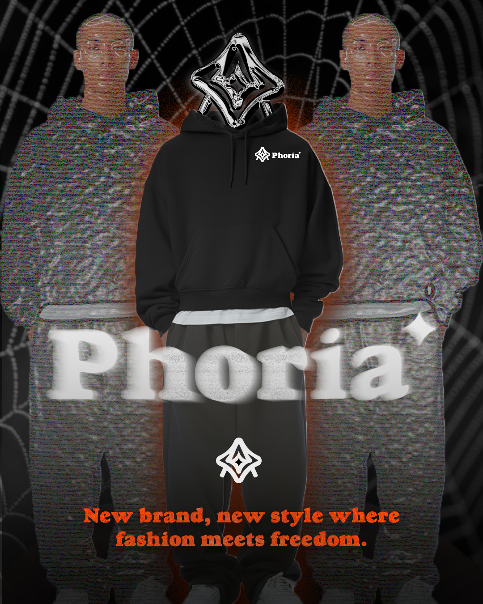

PHORIA
Plus qu'une marque, une insurrection visuelle.
Direction artistique et stratégie de "drop" pour l'élite du streetwear.

01 La Vision Stratégique
Bousculer les codes du Minimalisme
Mon objectif avec Phoria était de saturer l'espace visuel pour sortir du "trop propre". J'ai conçu cette identité sur une dualité brutale : le Deep Black pour l'autorité et le Magma Orange pour l'urgence.
En tant que lead sur ce projet, j'ai piloté l'intégralité du langage graphique (Glitch Art) pour qu'il ne soit pas qu'un décor, mais un manifeste : celui d'une génération qui refuse les normes pré-établies. Chaque pixel "cassé" est une décision stratégique pour renforcer l'aspect underground et premium.
02 Le Processus Décisionnel
Audit & Direction Artistique
Stratégie de PositionnementAnalyse de la saturation du marché (Off-White, Heron Preston). J'ai choisi de prendre le contre-pied en injectant une typographie Serif lourde là où la concurrence s'enferme dans le Sans-Serif technique.
Architecture de l'Identité
Conception GraphiqueCréation du symbole "Geometric Spark" et déploiement de l'univers typographique. Mon choix s'est porté sur la LTC Goudy Heavyface pour apporter cet héritage "luxe" au milieu du chaos digital.
Écosystème de Marque
Production de ContenuDesign des produits phares (Hoodies, Sweatpants) et création des visuels de campagne. J'ai supervisé la cohérence visuelle sur tous les supports pour garantir une immersion totale.
Déploiement & Brand Book
FinalisationCompilation du Pack Identité. J'ai défini les règles d'usage pour que la marque reste impactante, qu'elle soit sur un billboard géant ou sur une story Instagram de 15 secondes.
03 Design System & Psychologie
Le choix des couleurs et des fontes n'est pas esthétique, il est psychologique. L'orange Magma (#F24405) active les centres de l'attention et de l'achat impulsif, tandis que le noir structure l'exclusivité.

Palette de Puissance :
● #F24405 (Magma Orange) : L'énergie, l'urgence, le call-to-action.
● #2A201F (Deep Black) : La profondeur, le mystère, le positionnement haut de gamme.
04 Marketing & Growth Engine
Dans le luxe moderne, la désirabilité naît de la frustration. J'ai élaboré une stratégie marketing basée sur la rareté artificielle.
Le Modèle "Drop"
Exclusivité & DataLe Mécanisme
J'ai conçu un tunnel de vente basé sur des fenêtres de 24h. L'utilisation de waitlists permet de collecter une base de données qualifiée avant même la mise en vente.
L'Objectif
Générer du FOMO (Fear Of Missing Out). En limitant l'offre, je transforme chaque vêtement en un actif numérique de collection, augmentant mécaniquement la valeur perçue.
Anti-Advertising
Mystique & ViralitéLe Contenu
- Teasing Cryptique : Vidéos focus sur les textures sans montrer le produit final.
- Glitch Art : Une identité visuelle "disruptive" qui invite au partage organique.
Le Résultat
Phoria ne vend pas un produit, elle vend une appartenance. Cette approche marketing crée une communauté d'initiés plutôt qu'une simple base de clients.
05 Le Résultat Final
Une marque prête pour le marché : une identité visuelle forte qui fusionne le luxe traditionnel et l'énergie brute du streetwear, soutenue par un moteur marketing conçu pour la conversion.